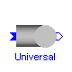
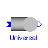
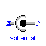
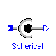
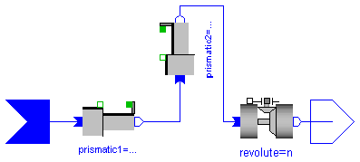
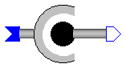

 


This package contains elements to model ideal joints.
Release Notes:
Copyright © 2000-2002, DLR.
The Modelica package is free software; it can be redistributed and/or modified under the terms of the Modelica license, see the license conditions and the accompanying disclaimer in the documentation of package Modelica in file "Modelica/package.mo".
ModelicaAdditions.MultiBody.Joints.Revolute

Joint where frame_b rotates around axis n which is fixed in frame_a. The joint axis has an additional flange where it can be driven with elements of the Modelica.Mechanics.Rotational library. The relative angle q [rad] and the relative angular velocity qd [rad/s] are used as state variables.
The following parameters are used to define the joint:
n : Axis of rotation resolved in frame_a (= same as in frame_b).
n must not necessarily be a unit vector. E.g.,
n = {0, 0, 1} or n = {1, 0, 1}
q0: Rotation angle offset in [deg].
If q=q0, frame_a and frame_b are identical.
startValueFixed: true, if start values of q, qd are fixed.
| Name | Default | Description |
|---|---|---|
| n[3] | {0,0,1} | Axis of rotation resolved in frame_a (= same as in frame_b) |
| q0 | 0 | Rotation angle offset (see info) [deg] |
| startValueFixed | false | true, if start values of q, qd are fixed |
model Revolute
"Revolute joint (1 degree-of-freedom, used in spanning tree)"
extends Interfaces.TreeJoint;
parameter Real n[3]={0,0,1}
"Axis of rotation resolved in frame_a (= same as in frame_b)";
parameter Real q0=0 "Rotation angle offset (see info) [deg]";
parameter Boolean startValueFixed=false
"true, if start values of q, qd are fixed";
SI.Angle q(final fixed=startValueFixed);
SI.AngularVelocity qd(final fixed=startValueFixed);
SI.AngularAcceleration qdd;
SI.Angle qq;
Real nn[3];
Real sinq;
Real cosq;
Modelica.Mechanics.Rotational.Interfaces.Flange_a axis;
Modelica.Mechanics.Rotational.Interfaces.Flange_b bearing;
equation
axis.phi = q;
bearing.phi = 0;
// define states
qd = der(q);
qdd = der(qd);
/*rotation matrix*/
nn = n/sqrt(n*n);
qq = q - q0*pi/180;
sinq = sin(qq);
cosq = cos(qq);
S_rel = [nn]*transpose([nn]) + (identity(3) - [nn]*transpose([nn]))*cosq -
skew(nn)*sinq;
/*other kinematic quantities*/
r_rela = zeros(3);
v_rela = zeros(3);
a_rela = zeros(3);
w_rela = nn*qd;
z_rela = nn*qdd;
/* Transform the kinematic quantities from frame_a to frame_b and the
force and torque acting at frame_b to frame_a
(= general equations of a "TreeJoint" specialized to this class).
*/
Sb = Sa*transpose(S_rel);
r0b = r0a;
vb = S_rel*va;
wb = S_rel*(wa + w_rela);
ab = S_rel*aa;
zb = S_rel*(za + z_rela + cross(wa, w_rela));
fa = transpose(S_rel)*fb;
ta = transpose(S_rel)*tb;
// d'Alemberts principle
axis.tau = nn*tb;
end Revolute;
ModelicaAdditions.MultiBody.Joints.Prismatic

Joint where frame_b is translated around axis n which is fixed in frame_a. The joint axis has an additional flange where it can be driven with elements of the Modelica.Mechanics.Translational library. The relative distance q [m] and the relative velocity qd [m] are used as state variables.
The following parameters are used to define the joint:
n : Axis of translation resolved in frame_a (= same as in frame_b).
n must not necessarily be a unit vector. E.g.,
n = {0, 0, 1} or n = {1, 0, 1}
q0: Relative distance offset in [m].
(in the direction of n).
If q=q0, frame_a and frame_b are identical.
startValueFixed: true, if start values of q, qd are fixed.
| Name | Default | Description |
|---|---|---|
| n[3] | {1,0,0} | Axis of translation resolved in frame_a (= same as in frame_b) |
| q0 | 0 | Relative distance offset(see info) [m] |
| startValueFixed | false | true, if start values of q, qd are fixed |
model Prismatic
"Prismatic joint (1 degree-of-freedom, used in spanning tree)"
extends Interfaces.TreeJoint;
parameter Real n[3]={1,0,0}
"Axis of translation resolved in frame_a (= same as in frame_b)";
parameter SI.Position q0=0 "Relative distance offset(see info)";
parameter Boolean startValueFixed=false
"true, if start values of q, qd are fixed";
SI.Position q(final fixed=startValueFixed);
SI.Velocity qd(final fixed=startValueFixed);
SI.Acceleration qdd;
SI.Position qq;
Real nn[3];
SI.Velocity vaux[3];
Modelica.Mechanics.Translational.Interfaces.Flange_a axis;
Modelica.Mechanics.Translational.Interfaces.Flange_b bearing;
equation
axis.s = q;
bearing.s = 0;
// define states
qd = der(q);
qdd = der(qd);
/*normalize axis vector*/
nn = n/sqrt(n*n);
/*kinematic quantities*/
S_rel = identity(3);
qq = q - q0;
r_rela = nn*qq;
v_rela = nn*qd;
a_rela = nn*qdd;
w_rela = zeros(3);
z_rela = zeros(3);
/* Transform the kinematic quantities from frame_a to frame_b and the
force and torque acting at frame_b to frame_a
(= general equations of a "TreeJoint" specialized to this class).
*/
Sb = Sa;
r0b = r0a + Sa*r_rela;
vaux = cross(wa, r_rela);
vb = va + v_rela + vaux;
wb = wa;
ab = aa + a_rela + cross(za, r_rela) + cross(wa, vaux + 2*v_rela);
zb = za;
fa = fb;
ta = tb + cross(r_rela, fa);
// d'Alemberts principle
axis.f = nn*fb;
end Prismatic;
ModelicaAdditions.MultiBody.Joints.Screw

Joint where frame_b rotates around axis n which is fixed in frame_a and at the same time is translated around the same axis. The rotational and translational movement are coupled by a fixed factor. The joint axis has an additional flange where it can be driven with elements of the Modelica.Mechanics.Rotational library. The relative angle q [rad] and the relative angular velocity qd [rad/s] are used as state variables.
The following parameters are used to define the joint:
n : Axis of rotation resolved in frame_a (= same as in frame_b).
n must not necessarily be a unit vector. E.g.,
n = {0, 0, 1} or n = {1, 0, 1}
q0 : Rotation angle offset in [deg].
If q=q0, frame_a and frame_b are identical.
R : Radius of the screw in [m].
slope: Slope of the screw in [deg].
(relative distance = (q-q0)*R*tan( slope*pi/180 ))
startValueFixed: true, if start values of q, qd are fixed.
| Name | Default | Description |
|---|---|---|
| n[3] | {1,0,0} | Screw axis resolved in frame_a and frame_b |
| R | 0.01 | Screw radius [m] |
| slope | 1 | Screw slope in [deg] (slope>0) |
| q0 | 0 | Screw axis angle offset in [deg] |
model Screw
"Screw joint (1 degree-of-freedom, used in spanning tree)"
extends Interfaces.TreeJoint;
parameter Real n[3]={1,0,0} "Screw axis resolved in frame_a and frame_b";
parameter SI.Length R=0.01 "Screw radius";
parameter Real slope=1 "Screw slope in [deg] (slope>0)";
parameter Real q0=0 "Screw axis angle offset in [deg]";
SI.Angle q(start=0, fixed=true);
SI.AngularVelocity qd(start=0, fixed=true);
SI.AngularAcceleration qdd;
Real nn[3];
Real nt[3];
Real sinq;
Real cosq;
Real ri;
Real vaux[3];
Real qq;
Modelica.Mechanics.Rotational.Interfaces.Flange_a axis;
Modelica.Mechanics.Rotational.Interfaces.Flange_b bearing;
equation
axis.phi = q;
bearing.phi = 0;
// define states
qd = der(q);
qdd = der(qd);
/*rotation matrix*/
nn = n/sqrt(n*n);
qq = q - q0*pi/180;
sinq = sin(qq);
cosq = cos(qq);
S_rel = [nn]*transpose([nn]) + (identity(3) - [nn]*transpose([nn]))*cosq -
skew(nn)*sinq;
/*other kinematic quantities*/
ri = R*tan(slope*pi/180);
nt = nn*ri;
r_rela = nt*qq;
v_rela = nt*qd;
a_rela = nt*qdd;
w_rela = nn*qd;
z_rela = nn*qdd;
/*Transform the kinematic quantities from frame_a to frame_b and the
force and torque acting at frame_b to frame_a
(= general equations of a "TreeJoint" specialized to this class).
*/
Sb = Sa*transpose(S_rel);
r0b = r0a + Sa*r_rela;
vaux = cross(wa, r_rela);
vb = S_rel*(va + v_rela + vaux);
wb = S_rel*(wa + w_rela);
ab = S_rel*(aa + a_rela + cross(za, r_rela) + cross(wa, vaux + 2*v_rela));
zb = S_rel*(za + z_rela + cross(wa, w_rela));
fa = transpose(S_rel)*fb;
ta = transpose(S_rel)*tb + cross(r_rela, fa);
// d'Alemberts principle
axis.tau = nn*tb + nt*fb;
end Screw;
ModelicaAdditions.MultiBody.Joints.Cylindrical

Joint where frame_b rotates around axis n which is fixed in frame_a and translates independently around the same axis. The relative angle revolute.q [rad], the relative distance prismatic.q [m], the relative angular velocity revolute.qd [rad/s] and the relative velocity prismatic.qd [m/s] are used as state variables.
The following parameters are used to define the joint:
n : Axis of cylindrical joint resolved in frame_a (= same as in frame_b). n must not necessarily be a unit vector. qt0 : If revolute.q=qr0 and prismatic.q=qt0, qr0 frame_a and frame_b are identical. startValueFixed: true, if start values of q, qd are fixed.
| Name | Default | Description |
|---|---|---|
| n[3] | {1,0,0} | Cylinder axis resolved in frame_a (= same as in frame_b) |
| qt0 | 0 | Distance offset (see info) [m] |
| qr0 | 0 | Rotation angle offset (see info) in [deg] |
| startValueFixed | false | true, if start values of q, qd are fixed |
model Cylindrical
"Cylindrical joint (2 degrees-of-freedom, used in spanning tree)"
extends Interfaces.TwoTreeFrames;
parameter Real n[3]={1,0,0}
"Cylinder axis resolved in frame_a (= same as in frame_b)";
parameter SI.Position qt0=0 "Distance offset (see info)";
parameter Real qr0=0 "Rotation angle offset (see info) in [deg]";
parameter Boolean startValueFixed=false
"true, if start values of q, qd are fixed";
Prismatic prismatic(
n=n,
q0=qt0,
startValueFixed=startValueFixed);
Revolute revolute(
n=n,
q0=qr0,
startValueFixed=startValueFixed);
equation
connect(frame_a, prismatic.frame_a);
connect(prismatic.frame_b, revolute.frame_a);
connect(revolute.frame_b, frame_b);
end Cylindrical;

Joint where frame_a rotates around axis nx which is fixed in frame_a and at the same time rotates around axis ny which is fixed in frame_b. The relative angles revolute1.q, revolute2.q [rad] and the relative angular velocities revolute1.qd, revolute2.qd [rad/s] are used as state variables.
The following parameters are used to define the joint:
nx : Axis of rotation 1 resolved in frame_a.
nx must not necessarily be a unit vector. E.g.,
nx = {0, 0, 1} or nx = {1, 0, 1}
ny : Axis of rotation 2 resolved in frame_b.
ny must not necessarily be a unit vector. E.g.,
ny = {0, 0, 1} or ny = {1, 0, 1}
qx0: Rotation angle offset 1 in [deg].
qy0: Rotation angle offset 2 in [deg].
If revolute1.q=qx0 and revolute2.q=qy0,
frame_a and frame_b are identical.
startValueFixed: true, if start values of q, qd are fixed.
| Name | Default | Description |
|---|---|---|
| nx[3] | {1,0,0} | Axis of revolute joint 1 resolved in frame_a |
| ny[3] | {0,1,0} | Axis of revolute joint 2 resolved in frame_b |
| qx0 | 0 | Rotation angle offset in direction of nx (see info) in [deg] |
| qy0 | 0 | Rotation angle offset in direction of ny (see info) in [deg] |
| startValueFixed | false | true, if start values of q, qd are fixed |
model Universal
"Universal joint (2 degrees-of-freedom, used in spanning tree)"
extends Interfaces.TwoTreeFrames;
parameter Real nx[3]={1,0,0} "Axis of revolute joint 1 resolved in frame_a";
parameter Real ny[3]={0,1,0} "Axis of revolute joint 2 resolved in frame_b";
parameter Real qx0=0
"Rotation angle offset in direction of nx (see info) in [deg]";
parameter Real qy0=0
"Rotation angle offset in direction of ny (see info) in [deg]";
parameter Boolean startValueFixed=false
"true, if start values of q, qd are fixed";
Revolute revolute1(
n=nx,
q0=qx0,
startValueFixed=startValueFixed);
Revolute revolute2(
n=ny,
q0=qy0,
startValueFixed=startValueFixed);
equation
connect(frame_a, revolute1.frame_a);
connect(revolute2.frame_b, frame_b);
connect(revolute1.frame_b, revolute2.frame_a);
end Universal;
ModelicaAdditions.MultiBody.Joints.Planar
Joint where frame_b can move in a plane and can rotation around an axis perpendicular to the plane. The plane is defined by vector n which is perpendicular to the plane and by vector nx, which points in the direction of the x-axis of the plane. The relative distances prismatic1.q, prismatic2.q [m] and the relative rotation angle revolute.q [rad], as well as the relative velocities prismatic1.qd, prismatic1.qd [m/s], and the relative angular velocity revolute.qd [rad/s] are used as state variables.
The following parameters are used to define the joint:
n : Axis perpendicular to plane resolved in frame_a (= same as in frame_b) n must not necessarily be a unit vector. E.g., n = {0, 0, 1} or n = {1, 0, 1} qx0 : If prismatic1.q0=qx0, prismatic2.q0=qy0 and qy0 revolute.q=qr0, frame_a and frame_b are identical. qr0 startValueFixed: true, if start values of q, qd are fixed.
| Name | Default | Description |
|---|---|---|
| n[3] | {0,0,1} | Axis perpendicular to plane resolved in frame_a (= same as in frame_b) |
| nx[3] | {1,0,0} | x-translation axis resolved in frame_a |
| qx0 | 0 | Distance offset in nx direction (see info) [m] |
| qy0 | 0 | Distance offset in ny direction (see info) [m] |
| qr0 | 0 | Rotation angle offset (see info) in [deg] |
| startValueFixed | false | true, if start values of q, qd are fixed |
model Planar
"Planar joint (3 degrees-of-freedom, used in spanning tree)"
extends Interfaces.TwoTreeFrames;
parameter Real n[3]={0,0,1}
"Axis perpendicular to plane resolved in frame_a (= same as in frame_b)";
parameter Real nx[3]={1,0,0} "x-translation axis resolved in frame_a";
parameter SI.Position qx0=0 "Distance offset in nx direction (see info)";
parameter SI.Position qy0=0 "Distance offset in ny direction (see info)";
parameter Real qr0=0 "Rotation angle offset (see info) in [deg]";
parameter Boolean startValueFixed=false
"true, if start values of q, qd are fixed";
Prismatic prismatic1(
n=(cross(cross(n, nx), n)),
q0=qx0,
startValueFixed=startValueFixed);
Prismatic prismatic2(
n=(cross(n, nx)),
q0=qy0,
startValueFixed=startValueFixed);
Revolute revolute(
n=n,
q0=qr0,
startValueFixed=startValueFixed);
equation
connect(frame_a, prismatic1.frame_a);
connect(prismatic1.frame_b, prismatic2.frame_a);
connect(prismatic2.frame_b, revolute.frame_a);
connect(revolute.frame_b, frame_b);
end Planar;

Joint where the origins of frame_a and frame_b always coincide, and the frames are rotating against each other. The joint is realized in such a way, that a singularity cannot occur. This is achieved because the Cardan angles are defined between a frame_fix fixed in frame_a and frame_b. Whenever the Cardan angles are near a singularity, the integration is stopped and frame_fix is changed, such that the Cardan angles are far away from the singularity. The following state variables are used:
phi[3] : Cardan angles, also called Tait-Bryan angles, i.e.,
rotate around 1-, 2-, 3-axis in [rad] from intermediate
frame_fix, which is fixed in frame_a, to frame_b. Initially, frame_fix
is identical to frame_a. If phi[2] is near its singularity (= pi/2 or -pi/2),
the frame_fix and phi are changed, such that phi[2] is far away from
its singularity.
w_rela[3]: Relative angular velocity of frame_b with respect to frame_a
resolved in frame_a in [rad/s].
model Spherical
"Spherical joint described by three Cardan angles (3 degrees-of-freedom, used in spanning tree)"
import Modelica.Math.*;
// S_rel needs a correct start value, because pre(S_rel) is referenced below
extends Interfaces.TreeJoint(S_rel(start=identity(3)));
SI.Angle phi[3](fixed={true,true,true})
"Cardan angles from a frame fixed in frame_a to frame_b";
protected
constant Real phi2_critical_deg=80
"angle in [deg] too close to singularity. Redefine S_fix and phi";
constant Real phi2_critical=phi2_critical_deg*Modelica.Constants.pi/180.0;
constant Real c2_small=1.e-5
"if cos(phi[2]) < c2_small, c2_small is used as guard against zero division"
;
Real s1;
Real s2;
Real s3;
Real c1;
Real c2;
Real c2a;
Real c3;
Boolean switch_state;
Real S_phi[3, 3] "S_rel = S_phi(phi)*S_fix";
Real S_fix[3, 3](start=identity(3)) "S_rel = S_phi(phi)*S_fix";
SI.AngularVelocity w_fix[3]
"Relative angular velocity resolved in intermediate frame S_fix";
equation
/* Determine sines and cosines of the Cardan angles */
s1 = sin(phi[1]);
s2 = sin(phi[2]);
s3 = sin(phi[3]);
c1 = cos(phi[1]);
c2a = cos(phi[2]);
c3 = cos(phi[3]);
/* Below, some expressions are divided by c2. By construction, it is not possible
that c2=0, during continuous simulation. However, at initial time and when
large numerical errors occur, c2=0 is possible, which would result in a division
by zero. The following statement is a guard against this unlikely situation.
*/
c2 = if noEvent(c2a > c2_small or c2a < -c2_small) then c2a else if noEvent(
c2a >= 0) then c2_small else -c2_small;
/* Relative transformation matrix
S_phi = [ c3, s3, 0;
-s3, c3, 0;
0, 0, 1]*[c2, 0, -s2;
0, 1, 0;
s2, 0, c2]*[1, 0, 0;
0, c1, s1;
0, -s1, c1];
*/
switch_state = phi[2] >= phi2_critical or phi[2] <= -phi2_critical;
when switch_state then
S_fix = pre(S_rel);
reinit(phi, zeros(3));
end when;
S_phi = [c2*c3, c1*s3 + s1*s2*c3, s1*s3 - c1*s2*c3; -c2*s3, c1*c3 - s1*s2*s3
, s1*c3 + c1*s2*s3; s2, -s1*c2, c1*c2];
S_rel = S_phi*S_fix;
// No translational movement
r_rela = zeros(3);
v_rela = zeros(3);
a_rela = zeros(3);
// Kinematic differential equations for rotational motion
w_fix = S_fix*w_rela;
der(phi) = {w_fix[1] + (s1*w_fix[2] - c1*w_fix[3])*s2/c2,c1*w_fix[2] + s1*
w_fix[3],(-s1*w_fix[2] + c1*w_fix[3])/c2};
der(w_rela) = z_rela;
// Kinematic relationships
frame_b.S = frame_a.S*transpose(S_rel);
frame_b.r0 = frame_a.r0;
frame_b.v = S_rel*frame_a.v;
frame_b.w = S_rel*(frame_a.w + w_rela);
frame_b.a = S_rel*frame_a.a;
frame_b.z = S_rel*(frame_a.z + cross(frame_a.w, w_rela) + z_rela);
// cut-torques are zero
frame_a.f = -transpose(S_rel)*frame_b.f;
frame_a.t = zeros(3);
frame_b.t = zeros(3);
end Spherical;
ModelicaAdditions.MultiBody.Joints.FreeMotion

Joint which does not constrain the motion between frame_a and frame_b. Such a joint is just used to define the desired states to be used. The joint is realized in such a way, that a singularity cannot occur. This is achieved because the Cardan angles are defined between a frame_fix fixed in frame_a and frame_b. Whenever the Cardan angles are near a singularity, the integration is stopped and frame_fix is changed, such that the Cardan angles are far away from the singularity. The following state variables are used:
r_rela[3]: Distance vector from the origin of frame_a to the origin
of frame_b, resolved in frame_a in [m].
phi[3] : Cardan angles, also called Tait-Bryan angles, i.e.,
rotate around 1-, 2-, 3-axis in [rad] from intermediate
frame_fix, which is fixed in frame_a, to frame_b. Initially, frame_fix
is identical to frame_a. If phi[2] is near its singularity (= pi/2 or -pi/2),
the frame_fix and phi are changed, such that phi[2] is far away from
its singularity.
v_rela[3]: = der(r_rela); relative velocity of frame_b with respect to frame_a
resolved in frame_a in [m/s].
w_rela[3]: Relative angular velocity of frame_b with respect to frame_a
resolved in frame_a in [rad/s].
model FreeMotion
"Free motion joint (6 degrees-of-freedom, used in spanning tree)"
import Modelica.Math.*;
// S_rel needs a correct start value, because pre(S_rel) is referenced below
extends Interfaces.TreeJoint(S_rel(start=identity(3)));
SI.Angle phi[3] "Cardan angles from a frame fixed in frame_a to frame_b";
protected
constant Real phi2_critical_deg=80
"angle in [deg] too close to singularity. Redefine S_fix and phi";
constant Real phi2_critical=phi2_critical_deg*Modelica.Constants.pi/180.0;
constant Real c2_small=1.e-5
"if cos(phi[2]) < c2_small, c2_small is used as guard against zero division"
;
SI.Velocity vaux[3];
Real s1;
Real s2;
Real s3;
Real c1;
Real c2;
Real c2a;
Real c3;
Boolean switch_state;
Real S_phi[3, 3] "S_rel = S_phi(phi)*S_fix";
Real S_fix[3, 3](start=identity(3)) "S_rel = S_phi(phi)*S_fix";
SI.AngularVelocity w_fix[3]
"Relative angular velocity resolved in intermediate frame S_fix";
equation
/* Determine sines and cosines of the Cardan angles */
s1 = sin(phi[1]);
s2 = sin(phi[2]);
s3 = sin(phi[3]);
c1 = cos(phi[1]);
c2a = cos(phi[2]);
c3 = cos(phi[3]);
/* Below, some expressions are divided by c2. By construction, it is not possible
that c2=0, during continuous simulation. However, at initial time and when
large numerical errors occur, c2=0 is possible, which would result in a division
by zero. The following statement is a guard against this unlikely situation.
*/
c2 = if noEvent(c2a > c2_small or c2a < -c2_small) then c2a else if noEvent(
c2a >= 0) then c2_small else -c2_small;
/* Relative transformation matrix
S_phi = [ c3, s3, 0;
-s3, c3, 0;
0, 0, 1]*[c2, 0, -s2;
0, 1, 0;
s2, 0, c2]*[1, 0, 0;
0, c1, s1;
0, -s1, c1];
*/
switch_state = phi[2] >= phi2_critical or phi[2] <= -phi2_critical;
when switch_state then
S_fix = pre(S_rel);
reinit(phi, zeros(3));
end when;
S_phi = [c2*c3, c1*s3 + s1*s2*c3, s1*s3 - c1*s2*c3; -c2*s3, c1*c3 - s1*s2*s3
, s1*c3 + c1*s2*s3; s2, -s1*c2, c1*c2];
S_rel = S_phi*S_fix;
// Kinematic differential equations for translational motion
der(r_rela) = v_rela;
der(v_rela) = a_rela;
// Kinematic differential equations for rotational motion
w_fix = S_fix*w_rela;
der(phi) = {w_fix[1] + (s1*w_fix[2] - c1*w_fix[3])*s2/c2,c1*w_fix[2] + s1*
w_fix[3],(-s1*w_fix[2] + c1*w_fix[3])/c2};
der(w_rela) = z_rela;
// Kinematic relationships
frame_b.S = frame_a.S*transpose(S_rel);
frame_b.r0 = frame_a.r0 + frame_a.S*r_rela;
vaux = cross(frame_a.w, r_rela);
frame_b.v = S_rel*(frame_a.v + v_rela + vaux);
frame_b.w = S_rel*(frame_a.w + w_rela);
frame_b.a = S_rel*(frame_a.a + cross(frame_a.z, r_rela) + cross(frame_a.w,
vaux + 2*v_rela) + a_rela);
frame_b.z = S_rel*(frame_a.z + cross(frame_a.w, w_rela) + z_rela);
// cut-forces and cut-torques are zero
frame_a.f = zeros(3);
frame_a.t = zeros(3);
frame_b.f = zeros(3);
frame_b.t = zeros(3);
end FreeMotion;